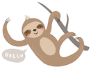

We've already hinted, that our first date didn't go as planned. Despite the rocky start, our relationship took a turn for the better when Megan invited Joshua over for a piece of chocolate cake (honestly, who could turn down chocolate cake?) We made sure to return to Maple - the first date spot - just before getting married to celebrate the beginning.
Both of us have enjoyed exploring Washington D.C.'s culinary diversity and cooking together in our very small kitchen. Aside from finding some of the best burger and pizza places, we have also enjoyed many a trips to Mintwood Place, Bistro Cacao, and La Tomatoe. We are still looking for a great BBQ and Seafood place in the District if you know one!
We have also had the pleasure of traveling together from San Francisco to Halliburton, Ontario (Great White North) to Boston, seen each other complete our Master's degrees, done a lot of trivia, and dreamed of getting a puppy - just to name a few.
Where did sloth come from?
When Megan first moved to the U.S. she couldn't work without violating her visa status, and was a full-time student - the dream - this resulted in many days of sleeping till noon, going to class in the evening, and doing little (but homework) inbetween. In short, she was a sloth. Eventually, it evolved from being a way to describe extra and lazy time to more of a pet-name.
Get to know The Sloths
Where are you from?
San Francisco, CA
Calgary, AB
What's your favorite food?
Pizza
Pizza
Favorite place you've traveled?
Italy
U.A.E.
Top travel bucket-list?
Costa-Rica
Malta
Top of your bucket-list?
Skydiving
Not sure..
Who is a pickier eater?
Her
Me
Who is more creative?
Her
Me
Who is more stubborn?
Her
Him (probably me)
Who is first to say 'I'm sorry'?
Me
Him
Who is a better cook?
Me
Me
Who will make the coffee in the morning?
Both
Both
Who talks the loudest?
Her
Him